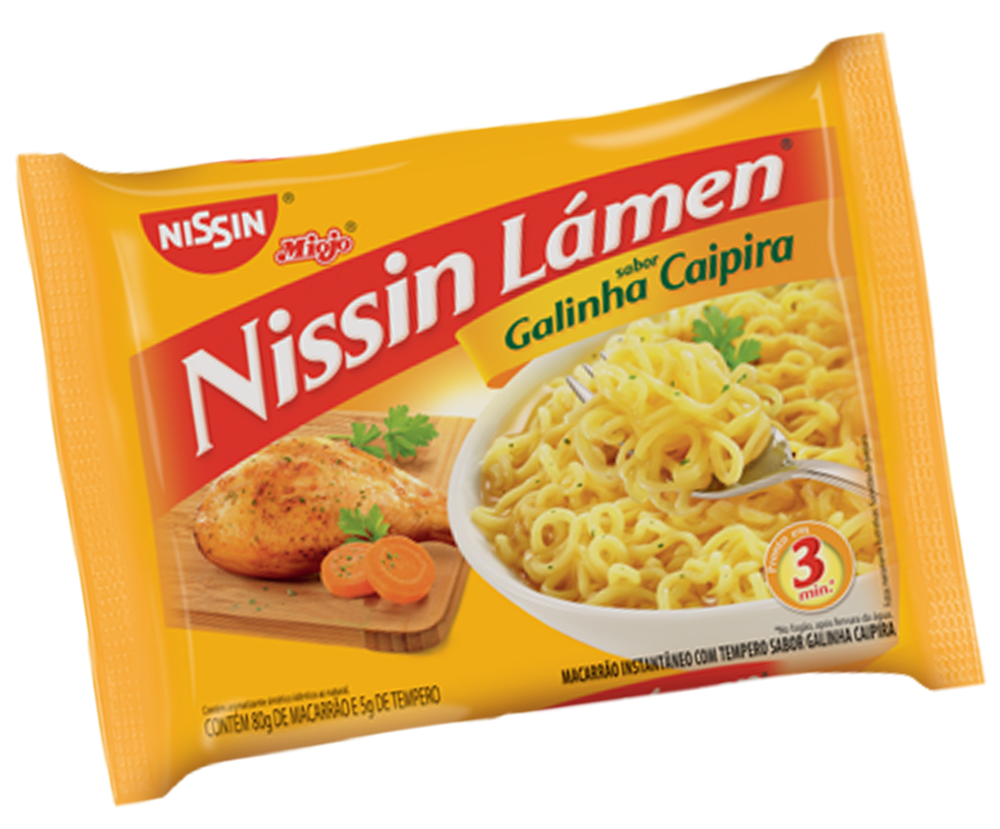

Como fazer miojo:
Prepare o Miojo Lámen sabor Galinha Caipira, abaixe o fogo, Acrescente a seleta de legumes e cozinhe por mais 2 minutos. Acrescente a mussarela e o peito de peru ou chester. Desligue o fogo e tampe a panela, aguarde 02 minutos e sirva em seguida.
Clique no miojo ☝☝☝